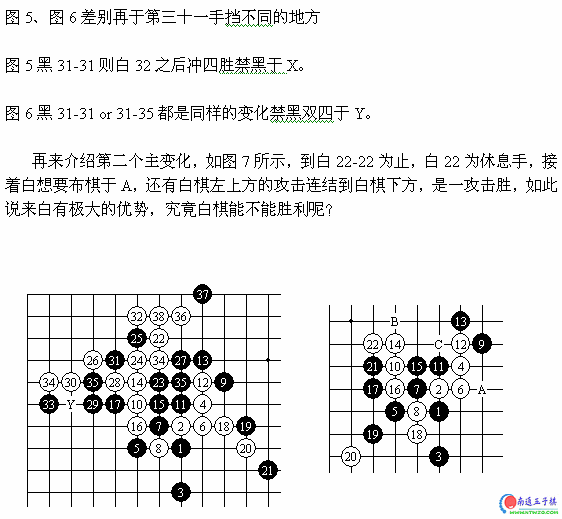
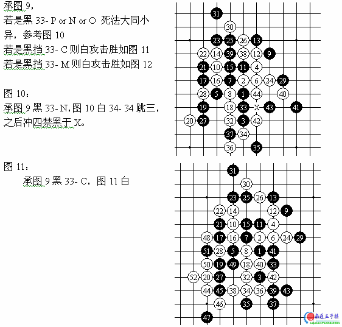

瑞星开局黑五F8的变化
首页
定式及研究
#1 瑞星开局黑五F8的变化 作者：有志青年 发表时间：2007-3-14 12:12:38



#2 Re:瑞星开局黑五F8的变化 作者：longfx 发表时间：2007-3-15 15:25:31
这个11可以说完全解决了，倒是有个11跳活三还存在局部问题。我没研究哈。
#3 Re:瑞星开局黑五F8的变化 作者：黄药师 发表时间：2007-4-8 1:37:58
头晕！
太复杂了！
#4 Re:瑞星开局黑五F8的变化 作者：井井有条虫 发表时间：2007-5-21 19:05:02
虽然已经很熟悉了・还是顶一下・
#5 Re:瑞星开局黑五F8的变化 作者：星永 发表时间：2007-7-12 23:06:55
我觉得图2中，11手不一定放在那里，放在J10，黑方似乎更强。图三中黑17－B，白18可置于H11叫杀,然后G11冲四,可简单抓禁，好像也不用那么复杂。
#6 Re:瑞星开局黑五F8的变化 作者：小小圣隐者 发表时间：2007-7-21 23:00:49
对,我同意楼上兄台的意见
#7 Re:瑞星开局黑五F8的变化 作者：户小 发表时间：2007-9-16 11:40:36
对不起,我想下载互动棋谱,但不知道怎么下载,能否告知
#8 Re:瑞星开局黑五F8的变化 作者：双队长 发表时间：2007-9-21 10:46:36
v解得挺的啊
#9 Re:瑞星开局黑五F8的变化 作者：风の情深 发表时间：2007-9-22 15:18:30
收益良多! 谢谢! 这个5很少玩